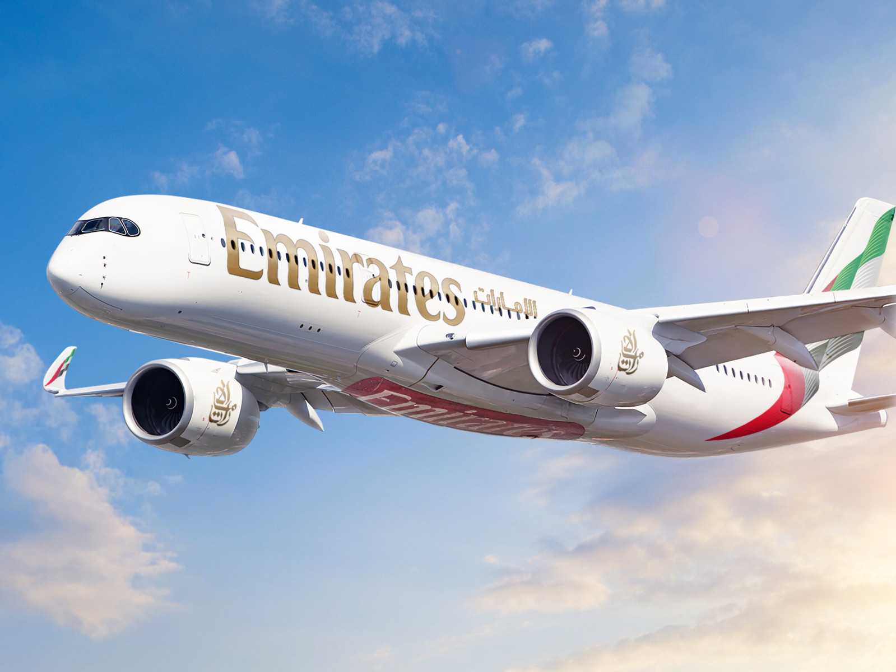
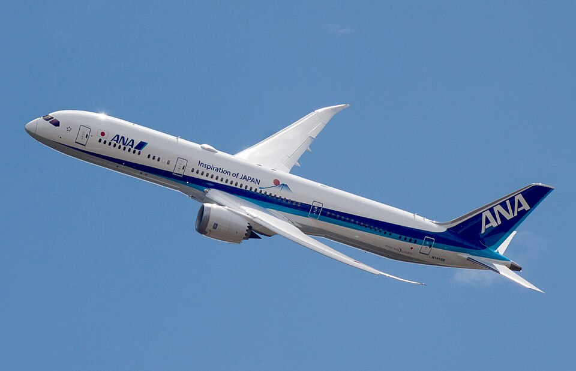
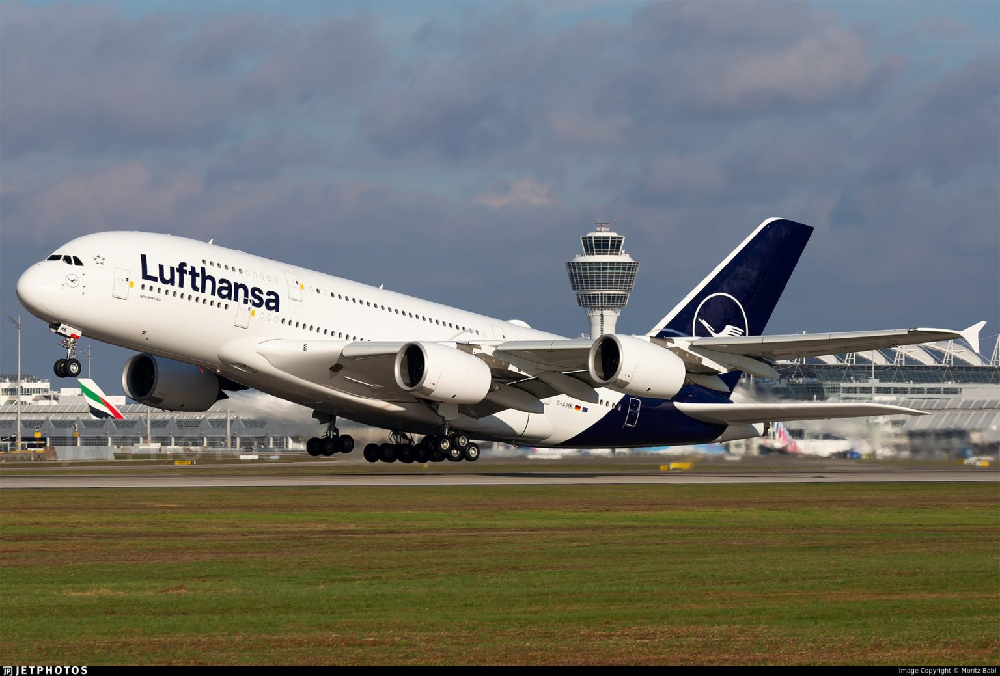
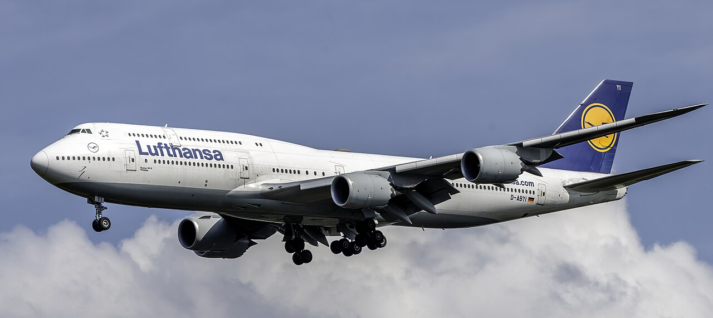
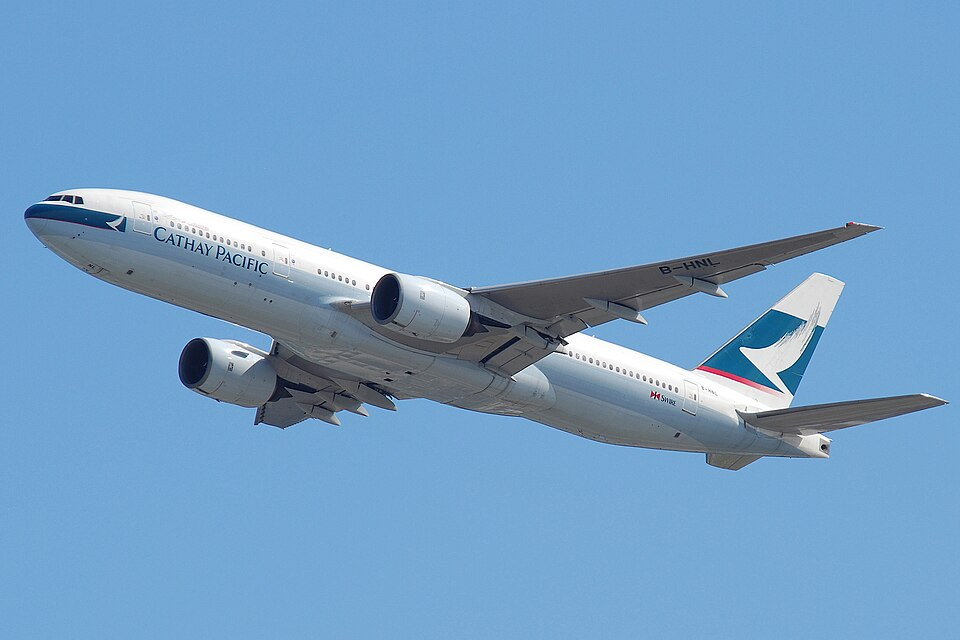

The Modern Flagships (Twin-Engine Efficiency)
These newer, twin-engine aircraft have largely replaced older four-engine giants because they offer
better fuel economy
and lower maintenance costs.
Airbus A350: Known as the "Extra Wide Body" (XWB), it features a distinctive "raccoon mask" cockpit
window. It is built
with over 50% composite materials, making it lighter and more fuel-efficient.
Range: Up to 8,700 nm for the A350-1000, making it one of the longest-range jets in service.
Capacity: Typically carries 300–410 passengers depending on the variant and configuration.

Boeing 787 Dreamliner: Famous for its raked
wingtips and scalloped engine nacelles (which reduce noise). It was the
first airliner to have a fuselage constructed primarily of composite materials.
Features: Higher cabin humidity and larger, electronically dimmable windows to reduce jet lag.
Capacity: Usually seats between 240 and 330 passengers across its three variants (-8, -9, -10).
Iconic
Giants (High Capacity)
Airbus A380: The world's largest passenger plane, featuring two full decks. While production has ended,
it remains
famous for its quiet ride and massive capacity, often exceeding 500 seats.
Boeing 747 ("Queen of the Skies"): Instantly recognizable by its upper-deck hump. Now mostly used for
cargo, the latest
747-8 remains one of the world's fastest commercial jets.

The Reliable Workhorse
Boeing 777 ("Triple Seven"): The most successful large twin-engine jet. It is powerful and versatile,
with the upcoming
777X variant featuring folding wingtips to fit into standard airport gates.